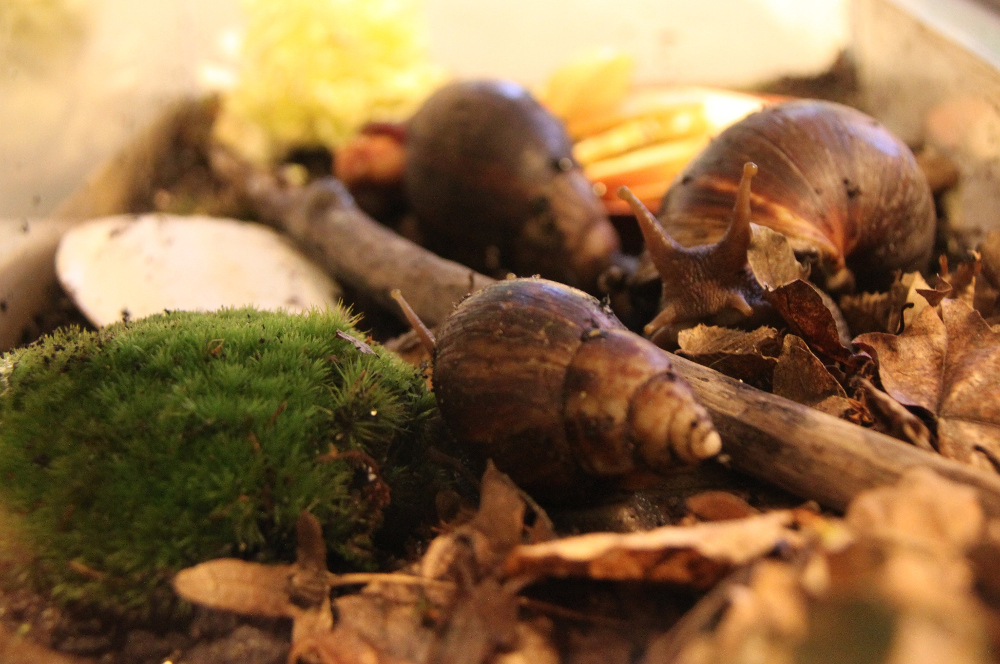
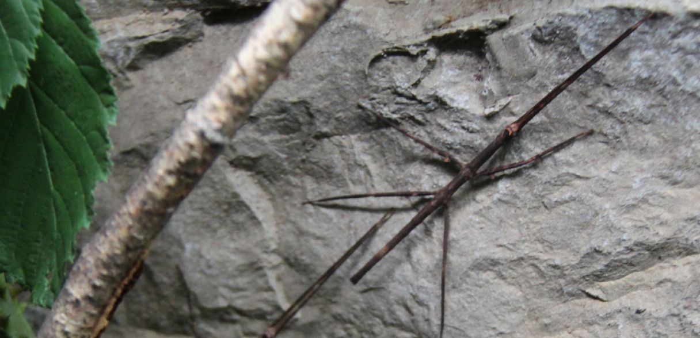

Wir machen den Zoo zum Klassenzimmer und bieten Ihnen und Ihren SchülerInnen die Möglichkeit zum
„Begreifen“ mit allen Sinnen. Die Begegnungen mit lebenden Tieren und das Lernen mit realem Bezug sind uns
ein großes Anliegen.
Außerdem wird das Bewusstsein für Tier- und Naturschutz gefördert.
Im Rahmen eines spannenden und vor allem lehrreichen Zoobesuches werden Führungen und ganze
Projekttage angeboten, die speziell an die Anforderungen und Interessen verschiedener Schulstufen und
Lehrpläne angepasst sind. Aus diesem Grund sind SchülerInnen aller Altersklassen herzlich willkommen!
Die Themen der Unterrichtsführungen/des Projekttages sollten unbedingt schon im Unterricht behandelt
worden sein oder behandelt werden und dienen der Ergänzung des Unterrichts und zur Vertiefung und
Auflockerung des Gelernten.
Für Wandertage und Ausflüge empfehlen wir ein allgemeines Thema wie etwa "Die Kuriositäten der Linzer
Zootiere".
Unterrichtsführungen:
Dauer: ca. 60-75 Minuten
Preis: € 2,00,- pro Teilnehmer (Mindestanzahl 10 Personen oder Pauschale von € 20,00,- bei weniger Personen,
Lehrer in Ausübung ihres Berufes sind frei), zzgl. Eintritt
Unterrichtsführungen werden zu folgenden Themen angeboten:
Säugetiere haben ein Fell, Vögel haben Federn, Reptilien haben Schuppen und Amphibien meist eine
feuchte Haut. Im Rahmen dieser Unterrichtsführung werden die Unterschiede bzw. Gemeinsamkeiten der
verschiedenen Körperbedeckungen genau unter die Lupe genommen!
Viele Tiere haben einen ganz besonderen Speiseplan und Essensgewohnheiten auf die im Rahmen dieser
Führung genau eingegangen wird. So beherbergt der Zoo Linz nicht nur Fleischfresser und Vegetarier,
sondern auch wahre Feinschmecker, Schlinger oder fastende Tiere. Bei höheren Schulstufen kann auch auf
die Anpassung der Zähne auf die jeweilige Ernährungsgewohnheiten eingegangen werden. Keine Fütterung inbegriffen.
Bei dieser Führung erfahren wir woher die Milch für den Kakao kommt, suchen die Tiere, die für unser
Frühstücksei zuständig sind, erkunden die Herkunft der Wolle, besuchen seltene Nutztierrassen und
klären, warum auch ein kleines Meerschwein ein Nutztier sein kann.
Tierpfleger ist für viele Jugendliche DER Traumberuf schlecht hin. Sind die einzigen Aufgaben eines
Tierpflegers Zootiere zu füttern und deren Gehege zu reinigen? Verbringt man die restliche Arbeitszeit mit
Tiere-streicheln?
Bei dieser Führung erfährt man, was den Beruf des Tierpflegers wirklich ausmacht, was die täglichen
Arbeiten in diesem Beruf sind, wie man Tierpfleger wird und welche Voraussetzungen man dafür braucht.
Blick hinter die Kulissen
Auf Wunsch kann die Führung mit einem Blick hinter die Kulissen des Linzer Zoos ausgebaut werden. Nach
dem erkunden der Futterküche wird für ein paar ausgewählte Tiere Futter zubereitet. (Betreten der
Tieranlagen, sowie direkter Tierkontakt ist nicht möglich) Dauer: ca. 90-105 Minuten Kosten: € 5,00,- pro Teilnehmer (Mindestanzahl 10 Personen oder Pauschale von € 50,00,- bei weniger
Personen, Lehrer in Ausübung ihres Berufes sind frei), zzgl. Eintritt
Es besteht auch die Möglichkeit die Unterrichtsführungen zu einem ganzen “Projekttag” auszubauen oder
Jugendlichen die Grundlagen der modernen Ethologie näherzubringen:
Dauer: ca. 3 Stunden, Kosten: € 5,00,- pro Teilnehmer (Mindestanzahl 10 Personen oder Pauschale von €
50,00,- bei weniger Personen, Lehrer in Ausübung ihres Berufes sind frei), zzgl. Eintritt
Neben der Unterrichtsführung zum gewählten Thema werden in der Zooschule zusätzlich alters- und
lehrplanspezifische Stationen zum “Begreifen mit allen Sinnen” angeboten und das Stoffgebiet
anschließend mit Arbeitsblättern und pädagogisch ausgearbeiteten Quizbögen aufgearbeitet. So macht
Lernen richtig Spaß und bleibt viel länger im Gedächtnis der Schüler als so manches, das in den
Klassenräumen gelernt wird!
Dauer: ca. 3 Stunden, Kosten: € 5,00,- inkl. Eintritt pro Teilnehmer (Mindestanzahl 10 Personen oder
Pauschale von € 50,00,- bei weniger Personen, Lehrer in Ausübung ihres Berufes sind frei)
„Verhaltensbiologischer Schnuppertag für Schüler ab 14 Jahren“
Die Kinder erlernen selbstständig und spielerisch die Grundlagen der modernen Ethologie. In kleinen
Gruppen werden Zootiere beobachtet und bei der Vor- und Nachbesprechung die Methoden der
Verhaltensforschung erklärt. Abschließend werden die Ergebnisse der Beobachtungen gemeinsam
ausgearbeitet und besprochen.
Allround-, Unterrichtsführungen oder weitere Themenführungen nach Absprache. Führungen finden nur nach
Voranmeldung statt!
Anmeldungen zu Führungen, Projekttagen oder dem verhaltensbiologischen Schnuppertag werden sehr gerne
unter office@zoo-linz.at oder 0732/73 71 80 entgegen genommen!


Ganz neu sind ab sofort die "Tiere fürs Klassenzimmer", die im Rahmen des Unterrichts beobachtet und
studiert werden können:
Im Linzer Zoo können Sie sich ab sofort auch Terrarien mit Achatschnecken oder Stabheuschrecken für
das Klassenzimmer und den Unterricht ausleihen.
Zusammen mit den wichtigsten Informationen, einer kurzen Pflegeanleitung und Ideen für den Unterricht
können die Terrarien (nach Absprache und Voranmeldung) im Zoo abgeholt werden und sorgen für ein
unvergessliches tierisches Lernerlebnis im Klassenzimmer!
Preis: kostenlos (freiwillige Spende), Kaution für das Terrarium: € 20.-, Größe der Terrarien: Achatschnecken: 60x30x30cm, Stabschrecken: 25x25x50cm, Besatz: 4 Achatschnecken von 1cm bis adult bzw. 4 adulte Stabschrecken + Jungtiere
Das Futter und die Versorgung der Tiere müssen vom Leihnehmer übernommen werden.
Selbstverständlich kann der Linzer Zoo von den Schülerinnen und Schülern auch auf eigene Faust und ohne
Führung erkundet werden. Dazu bietet der Zoo den Lehrkräften und Aufsichtspersonen Arbeitsmaterialien -
passend zu verschiedenen Altersstufen (Empfehlungen).
Das Angebot an Materialien als Download und an Infotafeln im Zoo wird ständig erweitert.